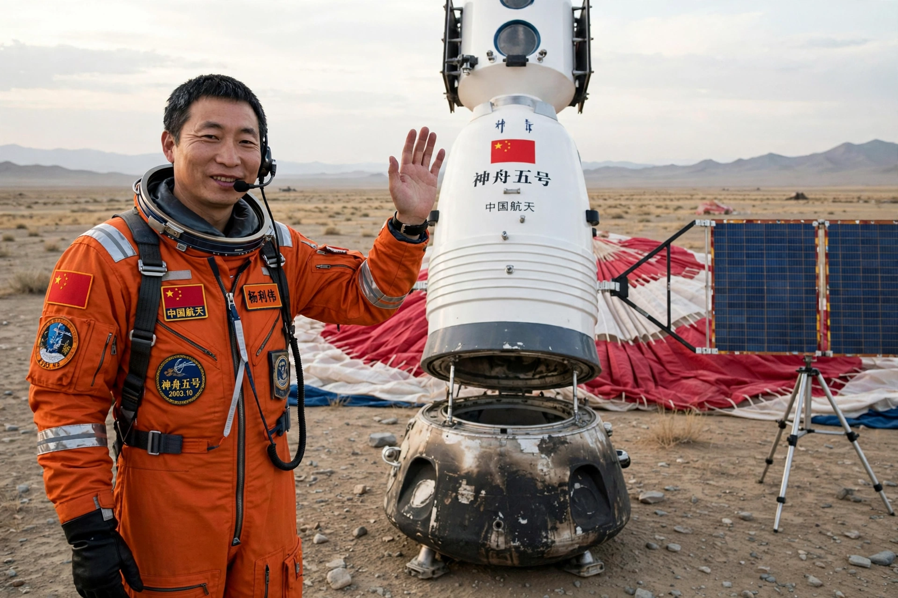

Yang Liwei
From Wikipedia, the free encyclopedia
| Yang Liwei | |
|---|---|
| Born | 21 June 1965, Suizhong, Liaoning |
| Occupation | PLA fighter pilot, taikonaut, programme official |
| Mission | Shenzhou 5 (2003) — China's first person in space |

China's first taikonaut.Yang Liwei (born 1965) is a Chinese major general, former fighter pilot and taikonaut who became the first person sent into space by China's crewed programme, aboard Shenzhou 5 on 15 October 2003. His single 21-hour flight made him one of the most famous people in China — 'China's Gagarin' — and he has served since as a senior leader of the programme rather than flying again.
Yang was selected in 1998 for the first taikonaut group from air-force pilots, and chosen for the first flight for his composure and test scores. In orbit he ate specially prepared Chinese dishes (reported menus included kung pao chicken and rice), showed the flags of China and the UN, and spoke with his family and ground controllers in transmissions released afterwards.
Honours
Yang holds the title 'Space Hero', a state honour created effectively for him, and rose to deputy chief designer-level leadership of the crewed programme and a seat on national political bodies — the standard arc for a founding spacefarer in the Chinese system. In 2017 asteroid 21064 Yangliwei and international awards marked his status as the face of China's arrival in human spaceflight.
See also
Shenzhou 5 · Shenzhou (spacecraft) · China Manned Space Agency